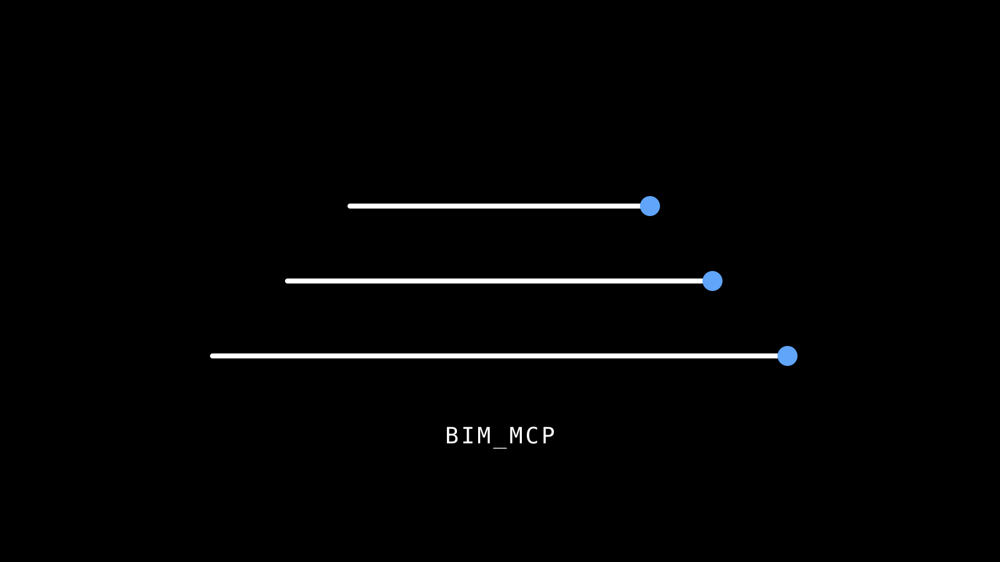
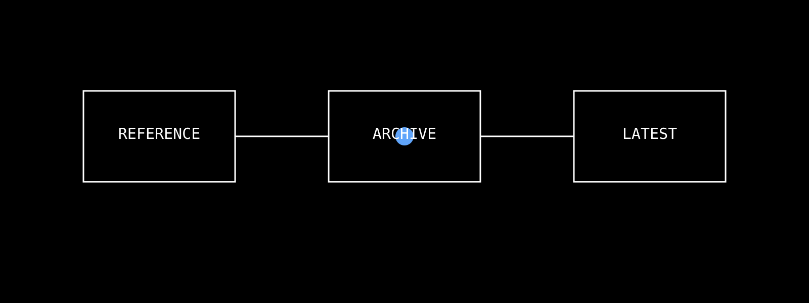

這裡是 5/23 demo 前的文件總覽：reference 是長期基礎，月度封存保留簡報與閱讀材料，hands-on 入口放實作流程與現場演示素材。


Skill / CLAUDE.md / Domain 的分工。
philosophyRevit MCP 的設計命題。
guard rails工具資料誠實、被動式能力、Domain method。
evidence成本曲線、返工、early mover 論述。
decision把 FAIL 從 0/1 改成可談判的 A/B/C/D。
skillsAI workflow orchestration 索引。
domain由 repo 內 domain/*.md 建出的 SOP 索引。
deployNice3point、Release.R{YY}、setup.ps1。
debug5 個經典問題與 5/18 demo 4 個修復。
contribute新增 SOP、Skill、工具前的寫作順序。
建議順序：首頁 → 22 propositions → 三條憲法 → 產業證據 → Spectrum Decision → hands-on → skills/domain/deployment/troubleshooting。